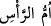
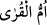

olan şeyleri artırır. Böylece ezelde ne ise sonunda da o olur.”
Şeyhülislâm şöyle demiştir: “İlâhî, senin celâl ve izzetin işâret mahalli bırakmadı,
senin celâl ve izzetine kimse vâkıf olmadı. Sen nisbet ve izâfet yolunu yukarı tuttun,
kimsenin buna ilmi ermedi. Ona vukufta ben noksanım, sen ziyâdesin. Ezelde ne olmuş
ise sonunda da o oldu.”
Mihnet ve meşakkatin hepsi su ve çamurdan olan tabîatımızdandır:
Gönülden önce o kil ve çamur yoktu, o ancak bizden hâsıl oldu.
Cihanda sâhib olduğumuz yoktur bir evimiz
Gideriz o eve ki, esas menzilimizdir.
“Bütün kitapların aslı O’nun yanındadır.” Araplar, asıl yerine geçen her şeye “ana”
derler. Beyine “
(başın anası)”, Mekke’ye
“
(şehirlerin anası)” denmesi böyledir.
Yâni, kendisinden hiçbir şeyin değişmeyeceği asıl kitab Allah Teâlâ’nın yanındadır.
Bu kitab, Allah’ın ezelde yazmış olduğu kitap olup kendi zâtıyla kâim, ezelî, ebedî ve
sonsuz ilminden ibârettir. O, her şeyi eksiksiz-fazlasız tam olarak ilmen kuşatmıştır.
O’nun katında her şey bir ölçüye göredir. O, kesinleşmiş hüküm levhası (levh-i
kazâ)dır.
Dört tane levh vardır:
1- Mahv ve isbâttan hâlî olan kesinleşmiş hükümlerin yer aldığı levh-i sâbıktır. Bu
akl-ı evvelin levhidir.
2- Kader levhi, yani birinci levhin külliyâtının tafsîl edilip sebeplerine bağlandığı
küllî nefs-i nâtıkaların levhidir. Levh-i mahfûz denen levha budur.
3- Bu âlemde bulunan tüm varlıkların şekil hey’et ve miktarlarının nakşedildiği cüz’î
semâvî nefislerin levhidir. Dünya semâsı denilen şey budur. Birinci levh bu âlemin
ruhu, ikinci levh kalbi olduğu gibi bu levh de hayâlidir.
4- Şehâdet âleminde sûretleri kabûl eden heyûlâların levhidir.
el-Vâkıâtü’l-Mahmûdiyye’de şöyle der: “Bilesin ki biri mânevî diğeri de sûrî olan
iki levh vardır. Sûrî levh, on sekiz bin adettir. Bunların en küçüğü bu taayyün
mertebesinde olanıdır. Bu levh değişme ve başkalaşmayı kabul eder. “Allah dilediğini
siler, dilediğini sâbit bırakır” âyeti de bununla alâkalıdır. Mânevî levh ise değişme ve
başkalaşmayı kabul etmez. Zamanı ve hacmi de yoktur. ‘Çevresi zebercedden olan kızıl
yakut olduğu söylenen levh, sûrî levhdir. Mânevî levha gelince o, Allah’ın ezelî
ilmindedir. Kesinlikle değişmez. Ancak bunların hepsi tek bir irâde ile meydana
gelmiştir.”
İnsan varlığında da mânevî ve sûrî iki adet cüz’î levh vardır. Cüz’î-mânevî levh, küllî
olan mânevî levhin kapısıdır. Cüz’î-sûrî levh ise (küllî olan) sûrî levhin kapısıdır. Bu
bakımdan surî levh, evliyâullahın çoğuna keşfolunur. Mânevî levha gelince bu ancak bir